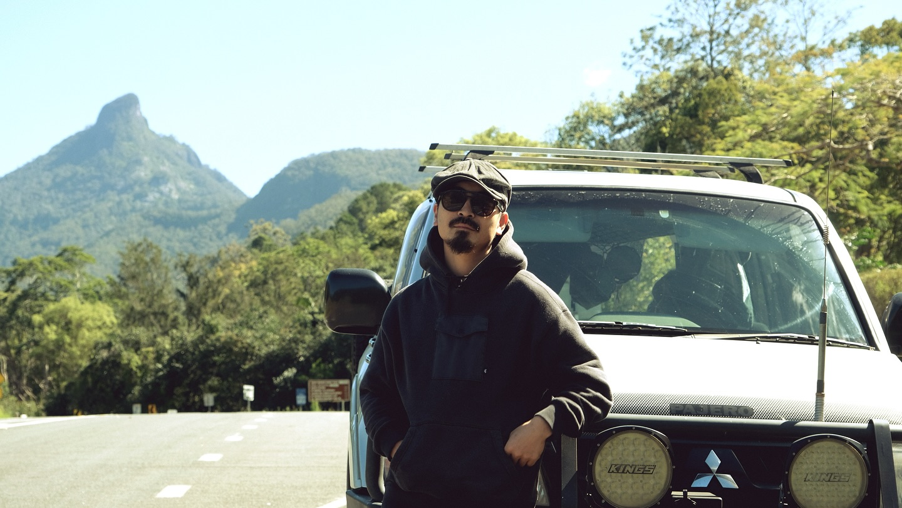
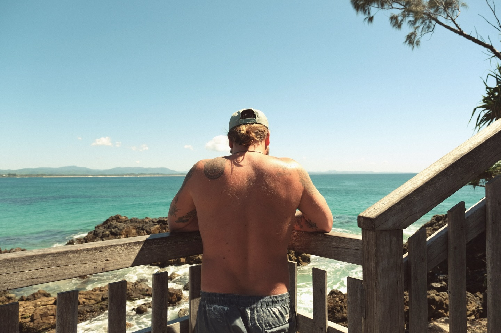
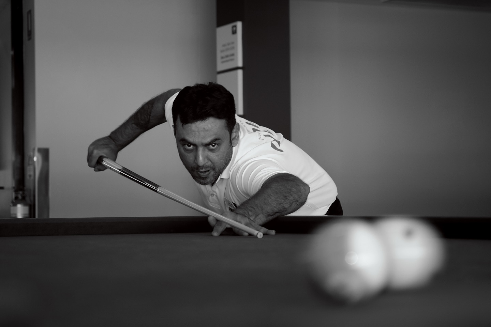
Ordered Chaos
感豊

その混沌が、わたしを形作っている。音、光、記憶、思考が境界を失い、ひとつの鼓動になる。
Now Playing
Entropic Echoes
深淵の記憶
Listen on
Spotify
Apple Music
YouTube Music
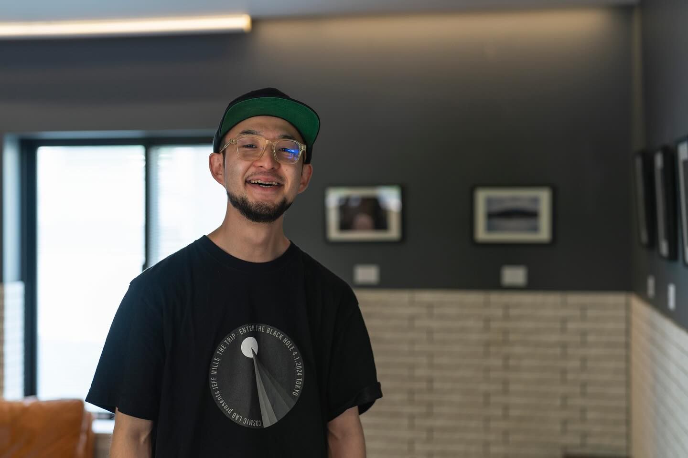
自然の鼓動を、音に乗せて、すべての感情はここから。
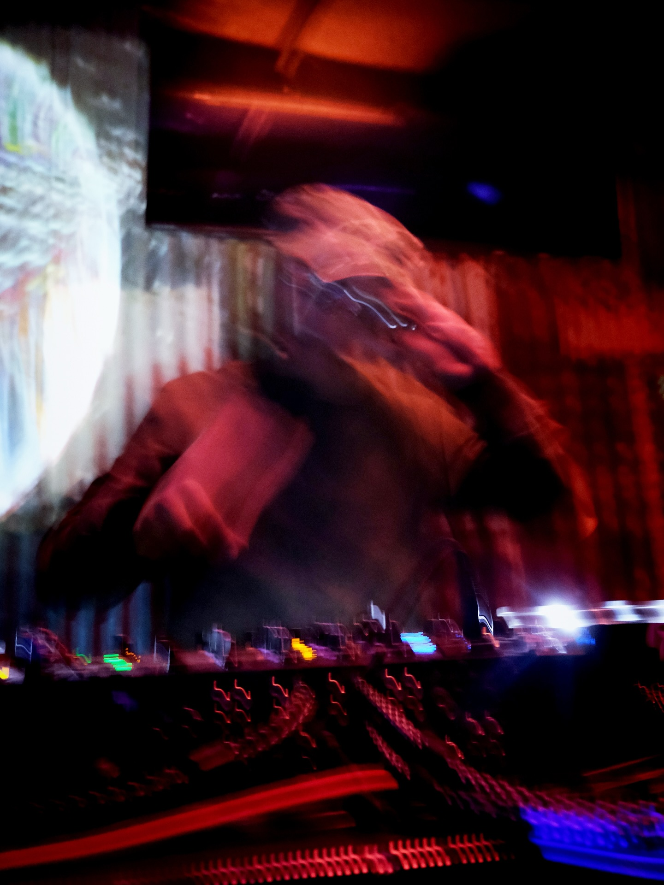
Now forming
Entropic Echoes
1.深淵の記憶4:23
2.境界線のノイズ3:51
3.無数の瞬間5:07
4.静寂のノイズ4:48
Listen / Selected tracks
01
深淵の記憶
4:23
02
境界線のノイズ
3:51
03
無数の瞬間
5:07
04
静寂のノイズ
4:48
05
Entropic Echoes
3:34
06
水脈の声
4:10
07
逆光する影
3:46
08
混沌の庭
5:22
見ることは、輪郭を決めることではない。光の揺れ、身体の距離、偶然の濁りをそのまま残す。
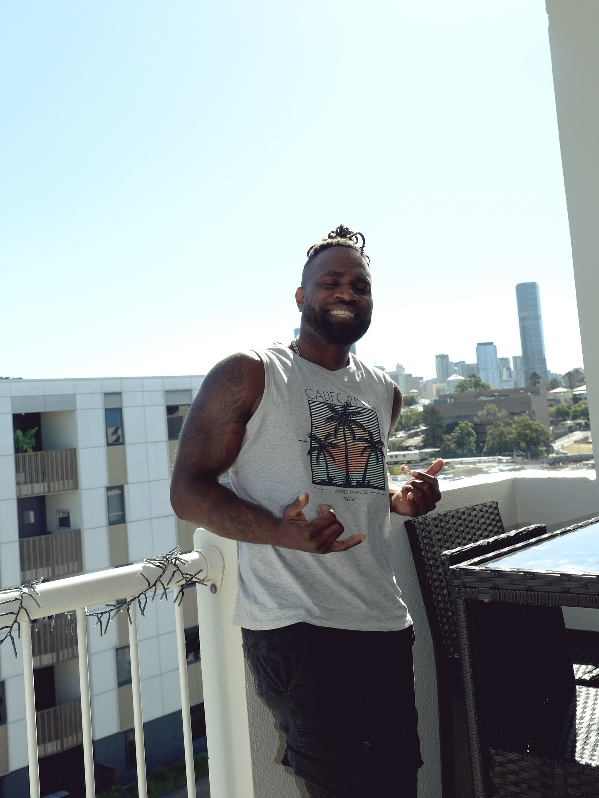
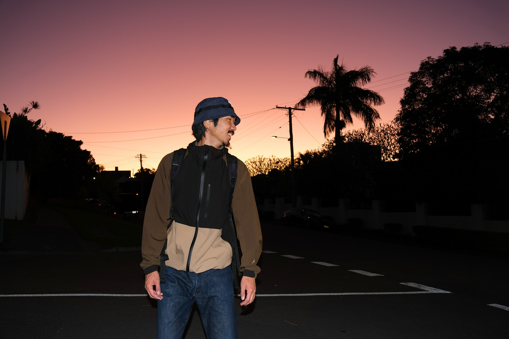
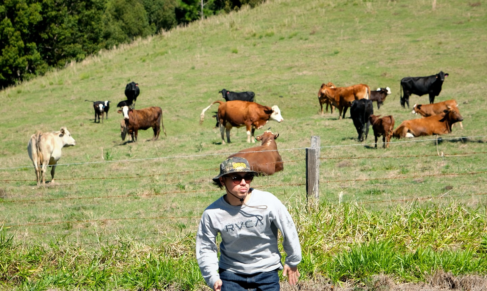
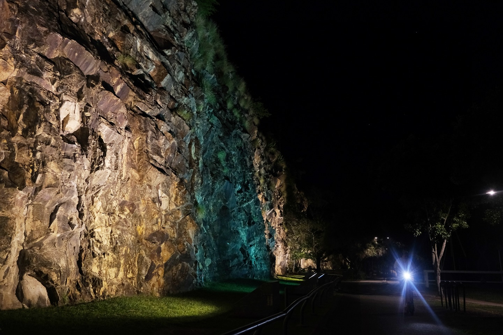
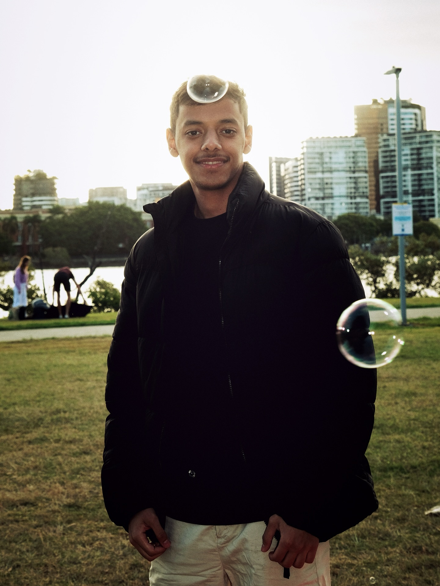
frames drift without asking where the horizon should be.
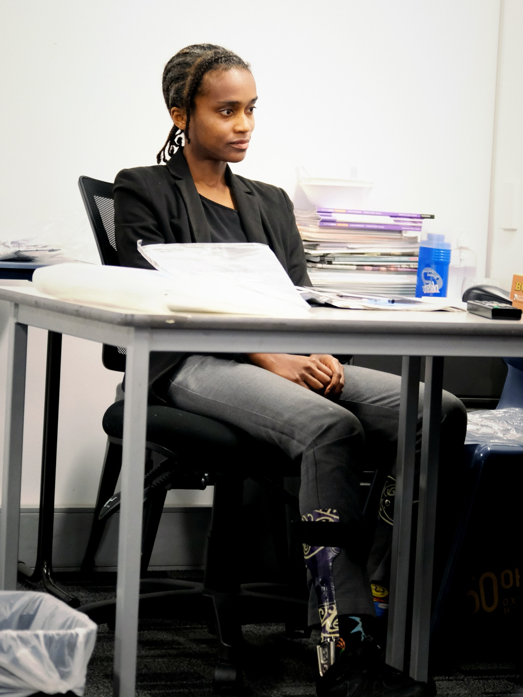
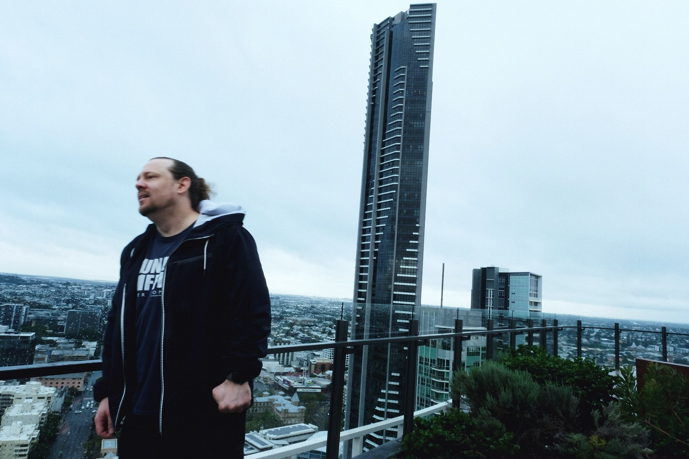
音の余韻を、映像の断片へ。再生前の静止画にも、すでにノイズと時間が混ざっている。
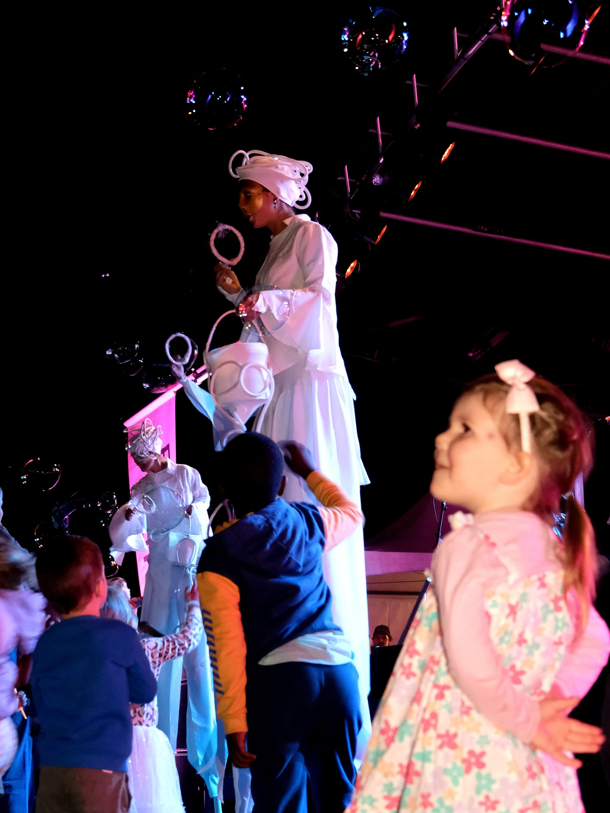
光の濁りを残す。意味になる前の気配を、急いで整理しない。音も写真も、結局は同じ場所から来ている。
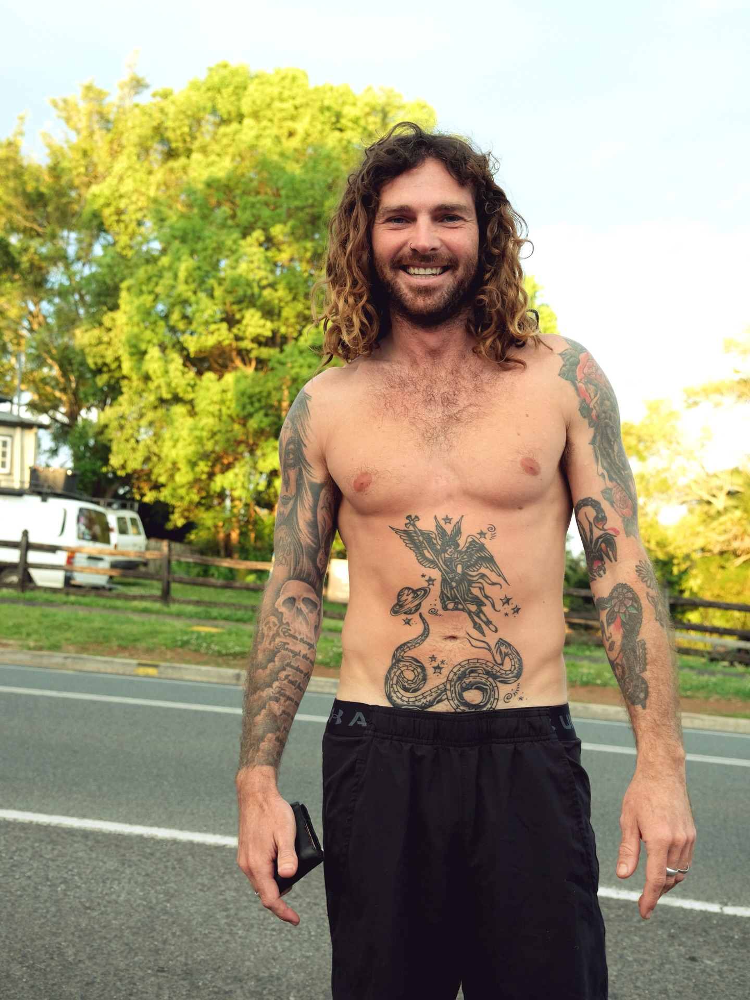
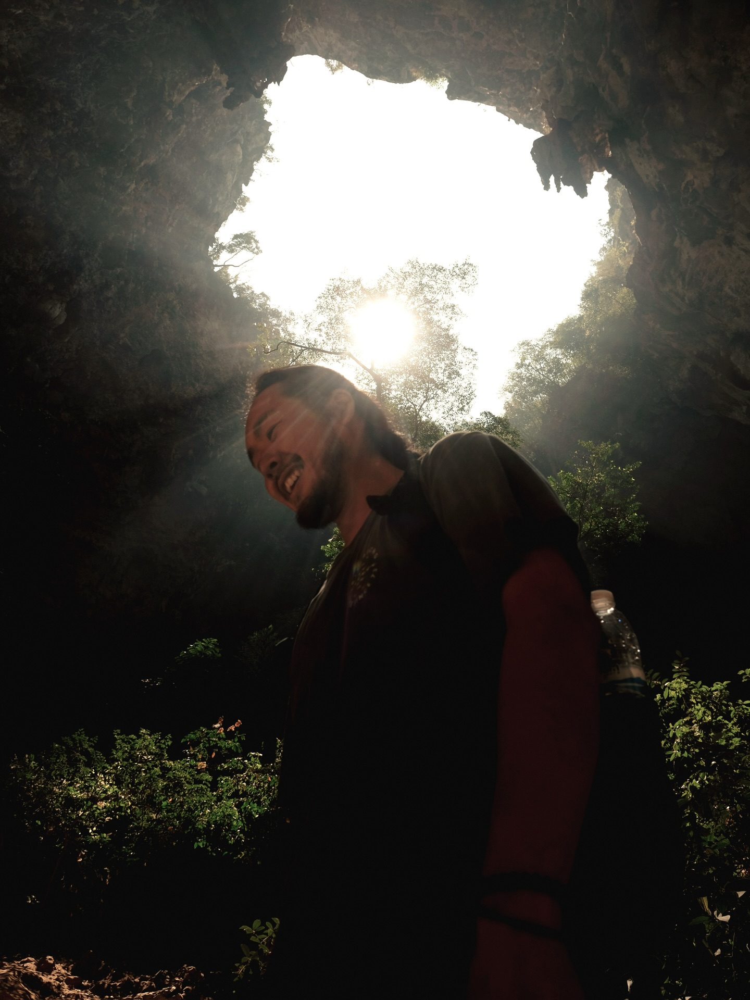